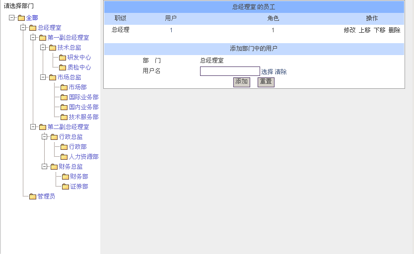
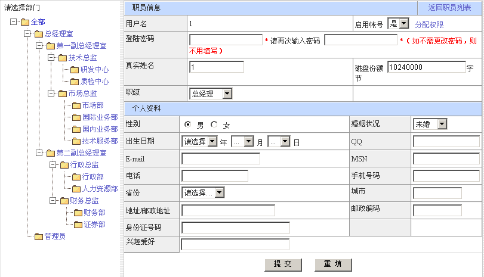

部门人员 |
| “组织机构”下的“部门人员”是对企事业单位的部门人员进行统一管理的模块。包括：增加部门人员、修改部门人员、删除部门人员。支持部门人员排序功能，支持系统缓存功能（可加快访问速度），以及人员基础数据修改。 下面是“部门人员”效果图。 |
|  |
| 1、增加部门人员。点击左侧部门树中的部门，右侧显示区显示该部门的所有人员，在“用户名”中选择用户，点击确定按钮即可添加一个部门人员。 |
| 2、修改部门人员。点击左侧部门树中的部门，右侧显示区显示该部门的所有人员，点击要修改人员记录后面的“修改”即可修改该人员信息。 |
| 3、删除部门人员。点击左侧部门树中的部门，右侧显示区显示该部门的所有人员，点击要删除人员后面的“删除”，即可删除该人员信息。 |
| 4、部门人员排序。点击右侧显示区显示该部门的所有人员后面的“上移”、“下移”就可以实现人员的重新排序。 |
| 5、人员基本信息修改。点击左侧部门树中的部门，右侧显示区显示该部门的所有人员，点击要修改人员的用户名，进入下图对用户基本信息进行修改。 |
|  |